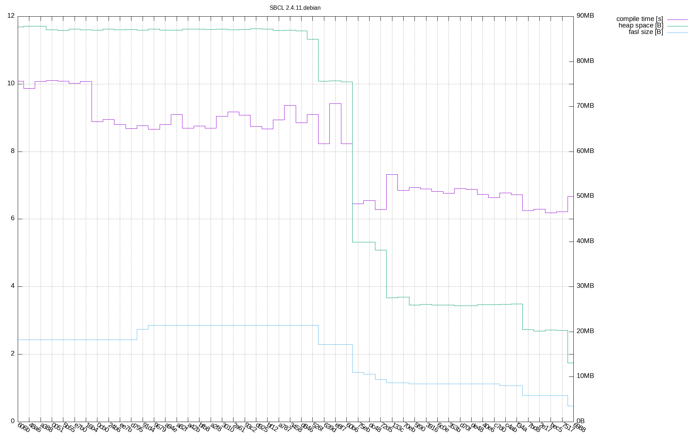

Design Ideas and Decisions in the Spell Library
Space Optimizations
DONE String Interning
For all strings that appear in the final representation of the dictionary
- We ensure that there are no duplicate strings
- We convert strings to
base_strings if their characters allow it
DONE Trie Path Compression
The initial trie often contains linear sub-trees of the form
node₀
└ c₁ → node₁
└ c₂ → node₂
└ c₃ → node₃
└ entry
We can avoid storing the intermediate nodes by compressing the path into a single string:
node₀
└ "c₁c₂c₃" → node₃
└ entry
With the Implicit Leaf Nodes optimization, this is further reduced to just
node₀ └ "c₁c₂c₃" → entry
DONE Implicit Base
The dictionary lookup operation traverses the trie along a path
that spells out the word. For example, the lookup for car could
visit the following sub-tree
node₀
└ #\c → node₁
└ #\a → node₂
└ #\r → node₃
└ entry
When the traversal arrives at entry, it is clear that the
corresponding dictionary word is car but in this case, the base
is also car. If we can mark entry as having the same base and
spelling, we can add the query string as the :base of the
returned word instance that we make (See Implicit Words). Since
the question of whether the spelling matches the base contains just
1 bit of information, we can easily encode the answer in the class
of the word object (See Subclasses for Properties and Implicit Words).
This idea can probably be extended to Advanced Base Compression.
DONE Bitfields for Properties
All properties of dictionary words have a small range of possible values, for example
(check-type number (member :any :singular :plural)) (check-type case (member nil :nominative :genitive)) (check-type gender (member nil :any :masculine :feminine :neuter))
for noun. We can encode this information in all small
integer instead of three slots using the bitfield library:
(bitfield:define-bitfield noun-info (singular boolean) (plural boolean) (case (member nil :nominative :genitive)) (masculine boolean) (feminine boolean) (neuter boolean))
The integer is so small that we can easily fit the class index into the same integer without needing additional "effective" storage space (See Implicit Words).
DONE Subclasses for Properties
The adjective word type has a single property:
:degree. The property has three possible values
:positive, :comparative and
:superlative. For cases like this in which a slot
contains less than, say, two bits of information, we can just not
represent the information in the object itself: We already "pay"
for a reference to the class of the object (either in the form of
the reference from an object to its class as returned by
cl:class-of or in the form of our class reference
mechanism in Implicit Words). We can piggyback on this reference
by creating one subclass of the adjective class for each
possible value of the degree property.
Now that I think about it, this may not actually save any space
since eliminating the bitfield from the
CLASS-INDEX+BITFIELD representation (see Implicit Words)
does not change the fact that the value requires one word of
storage.
DONE Singleton Child and Single Entry
When a node contains a single child or a single entry, we remove the sequence around the child or entry and store the child or entry directly in the slot of the parent.
DONE Implicit Leaf Nodes
The initial trie often contains sub-trees like the following
node₁
├ #\x → node₂
│ ⋮
└ #\y → node₃
├ entry₁
├ entry₂
⋮
└ entryₖ
node₁ is an inner node and node₃ is a leaf node. Since node₃
contains entries but no children, it is possible to omit node₃
and instead represent the sub-tree as (assuming we change lookup
accordingly):
node₁
├ #\x → node₂
│ ⋮
└ #\y → entry₁
entry₂
⋮
entryₖ
Maybe we could go further with this idea an reduce the number of nodes and slots some more?
DONE Implicit Words
Conceptually, instances of the leaf-mixin class store
entries that are (indirect) instances of word. However,
there is no need to actually store those instances. Instead, we can
store just enough information to reconstruct the word
instances on-demand:
- The class of which the object is a direct instance
- The values of the slots of the object. With the Bitfields for Properties optimization, this information is represented as a small integer.
- The base string. With the Implicit Base optimization, there is often no need to store an explicit reference.
The resulting representation is thus of one of two forms:
CLASS-INDEX+BITFIELD(CLASS-INDEX+BITFIELD . BASE-STRING)
TODO Vector of Children instead of Alist
The layout would be
#(CHARACTER-OR-STRING₁ CHILD₁ CHARACTER-OR-STRING₂ CHILD₂ …)
As a further optimization, we could use an array with element type,
say, (unsigned-byte 24) and put the strings and nodes
into big arrays. All array elements would be either (encoded)
characters or indices into the string and node arrays.
DONE Advanced Base Compression
Consider an entry with the spelling car's and the base
car. With the existing optimizations, the entry must store the
base explicitly. This is bad in two ways:
- The entry storage must contain a cell to hold the reference to the base string (for example, the storage may have to be upgraded to a cons of a bitfield and the string reference instead of just the bitfield)
- The referenced base string could be otherwise unreferenced if other optimizations succeeded in avoiding an explicit representation.
The idea is to store the base string reference as 2 since we can
get the base string from the spelling by removing the last two
characters of the spelling.
DONE Structure Sharing
To be written
Optimization Results
